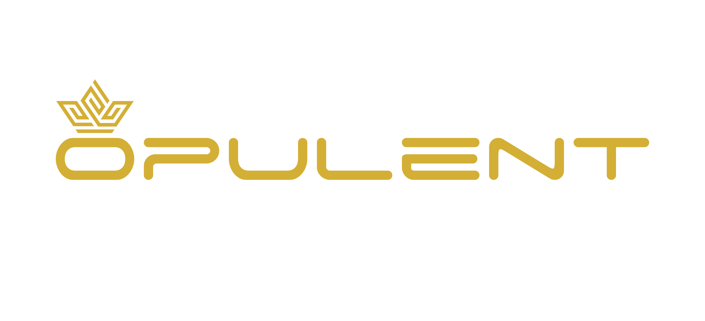

About Us
A vision that started before the trend
Long before Dubai became a global magnet for capital, the foundation of what is now Opulent Group was laid in 2010.
At a time when global markets were still recalibrating after the financial crisis, the focus was not on short-term gains, but on understanding how economies behave, how capital moves, and where long-term value is created.
Over the years, that understanding evolved into execution.
What began as a vision transformed into a multi-vertical ecosystem, each business not isolated, but strategically aligned to support the other.
From Insight to Infrastructure
The journey has not been linear. It has been layered.
From market observation to participation.
From participation to structuring.
From structuring to building an ecosystem.
Today, Opulent Group operates across:
- Strategic marketing and digital growth
- Real estate and asset-backed investments
- Luxury asset segments
- Influencer and digital economy platforms
- AI-driven business automation
Each vertical exists for a reason.
Each one strengthens the investment thesis of the other.
Why this matters to an Investor?
Most investment platforms offer access.
Very few offer context.
At Opulent Prime, the advantage is not just in identifying opportunities—but in understanding how those opportunities are influenced by:
- Market demand
- Digital visibility
- Consumer behavior
- Capital flow
Because we operate across these layers, we don’t just invest into markets.
We position within them.
The Philosophy
We believe:
Wealth is not accidental.
It is allocated.
Risk is not eliminated.
It is distributed.
Growth is not immediate.
It is compounded.
The Direction Forward
As global capital continues to shift toward stable, opportunity-rich economies, the UAE stands at the center of that movement.
Our role is not to predict it.
Our role is to structure participation within it.